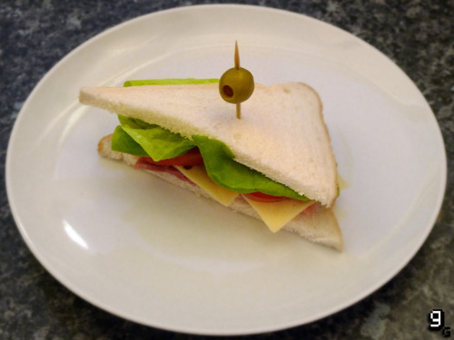

Sanduíche de dispositivo comestível

Sanduíche de dispositivo comestível do jogo Team Fortress 2
Ingredientes:
- 2 fatias de pão branco
- Maionese
- 1 folha de alface
- 2 fatias grandes de tomate
- 3 fatias de queijo suíço
- 1 fatia de presunto
Opcional:
- Azeitonas verdes
- Palito
Modo de preparo:
- Espalhe um pouco de maionese sobre as duas fatias de pão
- Coloque o presunto, o queijo, as fatias de tomate e a folha de alface em uma delas
- Cubra com a segunda fatia de pão
- Corte na diagonal, adicione uma azeitona em cima e use o palito para prender tudo.
Voltar